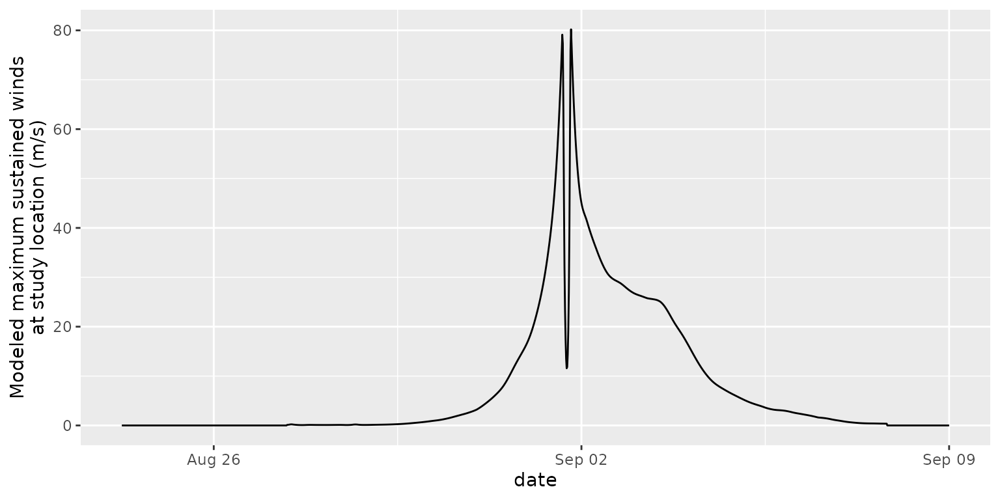

Modeling windspeed and direction at a single location
Source:vignettes/single_location.Rmd
single_location.RmdThis example focuses on how to model wind from a tropical cyclone at a single location, when the focus may be on a detailed description of the evolution of wind speed and direction at that location over the course of the storm.
As an example, we’ll focus on a site in the Bermudas when it was hit
by Hurricane Dorian in 2019. We are modeling the winds at a location on
Grand Abaco Island (latitude: 26.45, longitude: -77.05). Since this
location is very low-lying, we’ve modeled it as being over water rather
than over land (glandsea = FALSE). We need to create a
dataframe for this grid point, even though it will only be one row long
(since there’s only one location), because the storm modeling function
is expecting a dataframe as the input for the location(s) at which to
model.
location_to_model <- tibble(gridid = "Bermuda site, Grand Abaco Island",
glat = 26.45,
glon = -77.05,
glandsea = FALSE)
location_to_model
#> # A tibble: 1 × 4
#> gridid glat glon glandsea
#> <chr> <dbl> <dbl> <lgl>
#> 1 Bermuda site, Grand Abaco Island 26.4 -77.0 FALSENext, we need to get the track data for Hurricane Dorian. We have
extracted that tracking information from the IBTrACs dataset and saved
it in a form in the stormwindmodel package that is ready to
use in the wind modeling function. You can load and use the data using
the call:
data("dorian_tracks")
head(dorian_tracks)
#> # A tibble: 6 × 4
#> date latitude longitude wind
#> <chr> <dbl> <dbl> <dbl>
#> 1 201908240600 10.3 -46.4 25
#> 2 201908240900 10.3 -46.9 27
#> 3 201908241200 10.4 -47.5 30
#> 4 201908241500 10.5 -48.1 32
#> 5 201908241800 10.6 -48.7 35
#> 6 201908242100 10.7 -49.3 35At this point, we can map both the tracks of Dorian and the location where we’d like to model the storm winds over the course of Dorian:
library(rnaturalearth)
library(sf)
# Create a map of land borders in the area
all_countries <- ne_countries(scale = "medium",
returnclass = "sf")
near_landfall <- all_countries %>%
st_make_valid() %>%
st_crop(y = st_bbox(c(xmin = -82, xmax = -70, ymin = 20, ymax = 30)))
#> Warning: attribute variables are assumed to be spatially constant throughout
#> all geometries
dorian_sf_points <- dorian_tracks %>%
st_as_sf(coords = c("longitude", "latitude"), crs = st_crs(near_landfall))
dorian_sf_line <- dorian_sf_points %>%
summarise(do_union = FALSE) %>%
st_cast("LINESTRING")
location_to_model_sf <- location_to_model %>%
st_as_sf(coords = c("glon", "glat"), crs = st_crs(near_landfall))
ggplot() +
geom_sf(data = near_landfall) +
geom_sf(data = dorian_sf_line, color = "red") +
geom_sf(data = dorian_sf_points, color = "darkred", size = 0.8) +
geom_sf(data = location_to_model_sf, color = "yellow") +
theme(panel.background = element_rect(fill = "lightblue")) +
coord_sf(xlim = c(-82, -70), ylim = c(20, 30))Here’s another version, zoomed in to the study location and the color of points along the storm track used to show the storm’s central maximum sustained wind at that time:
library(viridis)
#> Loading required package: viridisLite
ggplot() +
geom_sf(data = near_landfall) +
geom_sf(data = dorian_sf_line, color = "red") +
geom_sf(data = dorian_sf_points, aes(color = wind)) +
geom_sf(data = location_to_model_sf, color = "yellow", size = 3) +
theme(panel.background = element_rect(fill = "lightblue")) +
coord_sf(xlim = c(-79, -76.5), ylim = c(25.8, 27.2)) +
scale_color_viridis(option = "A", direction = -1)Next, we can run the wind modeling function:
dorian_modeled <- calc_grid_winds(hurr_track = dorian_tracks,
grid_df = location_to_model)
str(dorian_modeled)
#> List of 3
#> $ vmax_sust : num [1:1513, 1] 0 0 0 0 0 0 0 0 0 0 ...
#> ..- attr(*, "dimnames")=List of 2
#> .. ..$ : chr [1:1513] "2019-08-24 06:00:00" "2019-08-24 06:15:00" "2019-08-24 06:30:00" "2019-08-24 06:45:00" ...
#> .. ..$ : chr "Bermuda site, Grand Abaco Island"
#> $ distance_from_storm : num [1:1513, 1] 3683 3679 3675 3671 3666 ...
#> ..- attr(*, "dimnames")=List of 2
#> .. ..$ : chr [1:1513] "2019-08-24 06:00:00" "2019-08-24 06:15:00" "2019-08-24 06:30:00" "2019-08-24 06:45:00" ...
#> .. ..$ : chr "Bermuda site, Grand Abaco Island"
#> $ surface_wind_direction: num [1:1513, 1] NA NA NA NA NA NA NA NA NA NA ...
#> ..- attr(*, "dimnames")=List of 2
#> .. ..$ : chr [1:1513] "2019-08-24 06:00:00" "2019-08-24 06:15:00" "2019-08-24 06:30:00" "2019-08-24 06:45:00" ...
#> .. ..$ : chr "Bermuda site, Grand Abaco Island"
library(lubridate)
dorian_modeled %>%
pluck("vmax_sust") %>%
as.data.frame() %>%
rownames_to_column(var = "date") %>%
rename(peak_wind = `Bermuda site, Grand Abaco Island`) %>%
mutate(date = ymd_hms(date)) %>%
ggplot(aes(x = date, y = peak_wind)) +
geom_line() +
ylab("Modeled maximum sustained winds\nat study location (m/s)")
dorian_modeled %>%
pluck("vmax_sust") %>%
as.data.frame() %>%
rownames_to_column(var = "date") %>%
rename(peak_wind = `Bermuda site, Grand Abaco Island`) %>%
mutate(date = ymd_hms(date)) %>%
ggplot(aes(x = date, y = peak_wind)) +
geom_line() +
xlim(ymd_hms(c("2019-09-01 00:00:00", "2019-09-02 12:00:00"))) +
ylab("Modeled maximum sustained winds\nat study location (m/s)")
#> Warning: Removed 1368 rows containing missing values or values outside the scale range
#> (`geom_line()`).
dorian_modeled %>%
pluck("surface_wind_direction") %>%
as.data.frame() %>%
rownames_to_column(var = "date") %>%
rename(swd = `Bermuda site, Grand Abaco Island`) %>%
mutate(date = ymd_hms(date)) %>%
ggplot(aes(x = date, y = swd)) +
geom_line() +
xlim(ymd_hms(c("2019-09-01 00:00:00", "2019-09-02 12:00:00"))) +
ylab("Surface wind direction (in polar conventions)")
#> Warning: Removed 1368 rows containing missing values or values outside the scale range
#> (`geom_line()`).
dorian_modeled %>%
pluck("surface_wind_direction") %>%
as.data.frame() %>%
rownames_to_column(var = "date") %>%
rename(swd = `Bermuda site, Grand Abaco Island`) %>%
mutate(date = ymd_hms(date)) %>%
filter(date %in% c(ymd_h("2019-09-01 14"),
ymd_h("2019-09-01 15"),
ymd_h("2019-09-01 20"),
ymd_h("2019-09-01 21")))
#> date swd
#> 1 2019-09-01 14:00:00 305.16265
#> 2 2019-09-01 15:00:00 308.98599
#> 3 2019-09-01 20:00:00 97.26651
#> 4 2019-09-01 21:00:00 99.46005Next, we can map the modeled surface wind direction at regular intervals as the storm passed it. For example, we could plot this every hour as the storm passed over the location.
modeled_wind_direction <- dorian_modeled %>%
pluck("surface_wind_direction") %>%
as.data.frame() %>%
rownames_to_column(var = "date") %>%
rename(swd = `Bermuda site, Grand Abaco Island`) %>%
mutate(date = ymd_hms(date)) %>%
filter(date %in% c(ymd_h("2019-09-01 14"),
ymd_h("2019-09-01 15"),
ymd_h("2019-09-01 16"),
ymd_h("2019-09-01 17"),
ymd_h("2019-09-01 18"),
ymd_h("2019-09-01 19"),
ymd_h("2019-09-01 20"),
ymd_h("2019-09-01 21"))) %>%
mutate(glat = location_to_model$glat,
glon = location_to_model$glon,
mag = 1)
modeled_wind_direction_sf <- dorian_modeled %>%
pluck("surface_wind_direction") %>%
as.data.frame() %>%
rownames_to_column(var = "date") %>%
rename(swd = `Bermuda site, Grand Abaco Island`) %>%
mutate(date = ymd_hms(date)) %>%
filter(date %in% c(ymd_h("2019-09-01 14"),
ymd_h("2019-09-01 15"),
ymd_h("2019-09-01 16"),
ymd_h("2019-09-01 17"),
ymd_h("2019-09-01 18"),
ymd_h("2019-09-01 19"),
ymd_h("2019-09-01 20"),
ymd_h("2019-09-01 21"))) %>%
mutate(glat = location_to_model$glat,
glon = location_to_model$glon) %>%
st_as_sf(coords = c("glon", "glat"), crs = st_crs(near_landfall))
library("metR")
#>
#> Attaching package: 'metR'
#> The following object is masked from 'package:purrr':
#>
#> cross
library(scales)
#>
#> Attaching package: 'scales'
#> The following object is masked from 'package:viridis':
#>
#> viridis_pal
#> The following object is masked from 'package:purrr':
#>
#> discard
#> The following object is masked from 'package:readr':
#>
#> col_factor
ggplot() +
geom_sf(data = near_landfall) +
geom_sf(data = dorian_sf_line) +
geom_arrow(data = modeled_wind_direction %>%
filter(date == ymd_h("2019-09-01 20")),
aes(x = glon, y = glat, angle = swd, mag = mag),
color = "red",
direction = "ccw") +
theme(panel.background = element_rect(fill = "lightblue")) +
coord_sf(xlim = c(-79, -76.5), ylim = c(25.8, 27.2)) +
scale_color_viridis(option = "A", direction = -1)
Make a grid with points throughout the area near landfall:
near_lf_grid <- expand_grid(glon = seq(-79.0, -76.5, by = 0.1),
glat = seq(25.5, 27.5, by = 0.1)) %>%
mutate(gridid = as.character(1:n()),
glandsea = FALSE)
ggplot() +
geom_sf(data = near_landfall) +
geom_point(data = near_lf_grid, aes(x = glon, y = glat), color = "yellow") +
theme(panel.background = element_rect(fill = "lightblue")) +
coord_sf(xlim = c(-79, -76.5), ylim = c(25.5, 27.5))
dorian_modeled_2 <- calc_grid_winds(hurr_track = dorian_tracks,
grid_df = near_lf_grid)
modeled_wind_direction_2 <- dorian_modeled_2 %>%
pluck("surface_wind_direction") %>%
as.data.frame() %>%
rownames_to_column(var = "date") %>%
mutate(date = ymd_hms(date)) %>%
filter(date %in% c(ymd_h("2019-09-01 14"),
ymd_h("2019-09-01 15"),
ymd_h("2019-09-01 16"),
ymd_h("2019-09-01 17"),
ymd_h("2019-09-01 18"),
ymd_h("2019-09-01 19"),
ymd_h("2019-09-01 20"),
ymd_h("2019-09-01 21"))) %>%
pivot_longer(-date, names_to = "gridid", values_to = "swd") %>%
left_join(near_lf_grid, by = "gridid") %>%
mutate(mag = 0.2)
dorian_tracks_2 <- dorian_tracks %>%
mutate(date = ymd_hm(date))
dorian_tracks_3 <- dorian_tracks %>%
mutate(date = ymd_hm(date)) %>%
filter(date <= ymd_h("2019-09-01 15"))
ggplot() +
geom_sf(data = near_landfall) +
geom_path(data = dorian_tracks_2, aes(x = longitude, y = latitude),
color = "gray") +
geom_path(data = dorian_tracks_3, aes(x = longitude, y = latitude),
color = "red") +
geom_arrow(data = filter(modeled_wind_direction_2,
date == ymd_h("2019-09-01 15")),
aes(x = glon, y = glat, angle = swd, mag = mag),
direction = "ccw",
color = "yellow") +
geom_point(data = near_lf_grid, aes(x = glon, y = glat), size = 0.5) +
geom_arrow(data = modeled_wind_direction %>%
filter(date == ymd_h("2019-09-01 15")),
aes(x = glon, y = glat, angle = swd, mag = mag),
color = "blue",
direction = "ccw") +
geom_point(data = modeled_wind_direction %>%
filter(date == ymd_h("2019-09-01 15")),
aes(x = glon, y = glat), size = 0.5) +
theme(panel.background = element_rect(fill = "lightblue")) +
coord_sf(xlim = c(-79, -76.5), ylim = c(25.5, 27.5)) +
scale_mag(
rescaler = \(x, from) rescale(x, c(0, 0.5), c(0, max(x, na.rm = TRUE)))
)
dorian_tracks_3 <- dorian_tracks %>%
mutate(date = ymd_hm(date)) %>%
filter(date <= ymd_h("2019-09-01 21"))
ggplot() +
geom_sf(data = near_landfall) +
geom_path(data = dorian_tracks_2, aes(x = longitude, y = latitude),
color = "gray") +
geom_path(data = dorian_tracks_3, aes(x = longitude, y = latitude),
color = "red") +
geom_arrow(data = filter(modeled_wind_direction_2,
date == ymd_h("2019-09-01 21")),
aes(x = glon, y = glat, angle = swd, mag = mag),
direction = "ccw",
color = "yellow") +
geom_point(data = near_lf_grid, aes(x = glon, y = glat), size = 0.5) +
geom_arrow(data = modeled_wind_direction %>%
filter(date == ymd_h("2019-09-01 21")),
aes(x = glon, y = glat, angle = swd, mag = mag),
color = "blue",
direction = "ccw") +
theme(panel.background = element_rect(fill = "lightblue")) +
coord_sf(xlim = c(-79, -76.5), ylim = c(25.5, 27.5)) +
scale_mag(
rescaler = \(x, from) rescale(x, c(0, 0.5), c(0, max(x, na.rm = TRUE)))
)